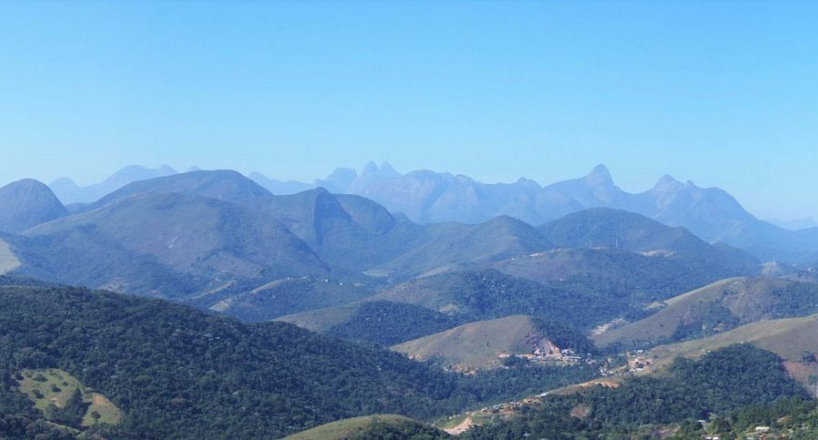

O parque possui áreas de preservação natural, atividades ecológicas e ações voltadas à conscientização ambiental.
Caminhada com vista panorâmica da região serrana.
Dificuldade: MédiaPercurso educativo sobre fauna e flora local.
Dificuldade: LeveCaminho leve com acesso a nascente preservada.
Dificuldade: LeveAtividades educativas voltadas à preservação ambiental.
10/06 • 09:00Evento de conscientização e recuperação ambiental.
22/06 • 08:00